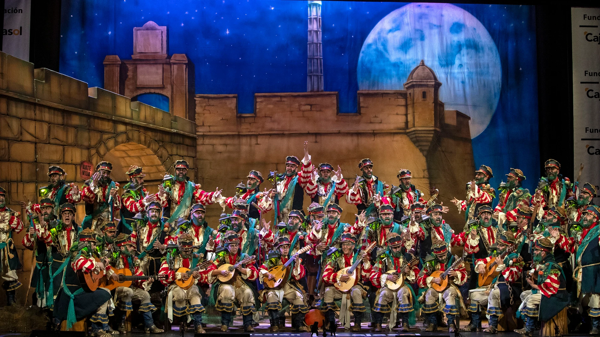

Categorías de agrupaciones
- Chirigotas
- Comparsas
- Coros
- Cuartetos
La maquinaria para la celebración del Concurso Oficial de Agrupaciones Carnavalescas del Gran Teatro Falla de Cádiz de 2025 ya se encuentra en marcha.
Este sábado se celebrará el sorteo del orden de actuación de las clasificatorias de adultos, cuya Gran Final se celebrará el próximo 28 de febrero, Día de Andalucía. También se las semifinales de infantiles y juveniles

Tras el final de la inscripción hay un aumento en el número de grupos en la categoría de adultos, sobre todo por la gran cantidad de chirigotas que van a regresar al certamen de coplas.
Son 135 grupos de adultos (59 comparsas, 52 chirigotas, 19 coros y cinco cuartetos). En la cantera, son 29 de infantiles (ocho comparsas, diez chirigotas, un coro y diez cuartetos) y 17 de juveniles (seis comparsas, seis chirigotas, cuatro cuartetos y un coro).